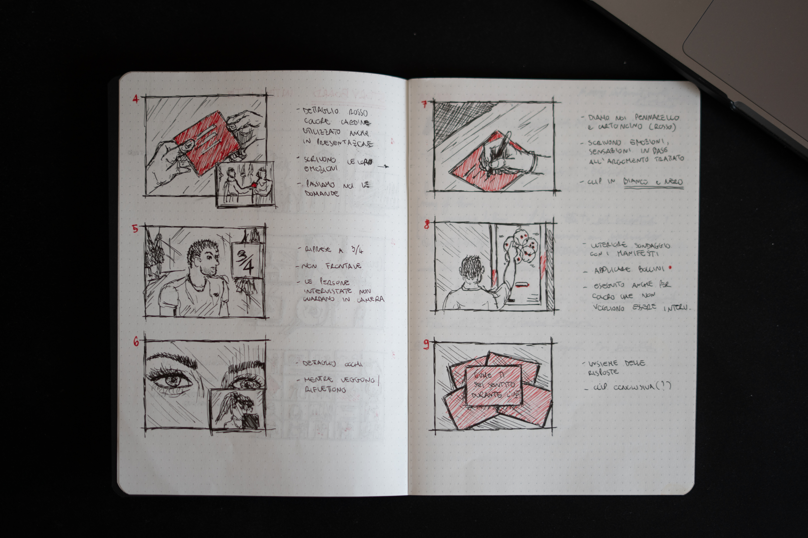
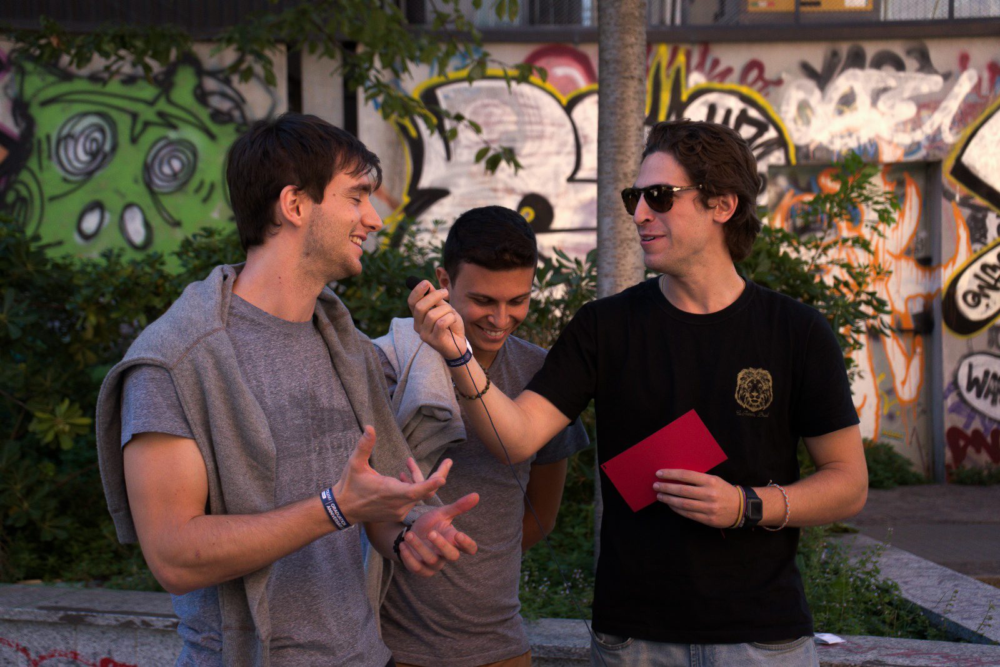
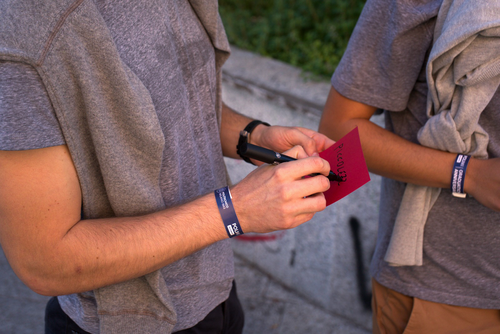
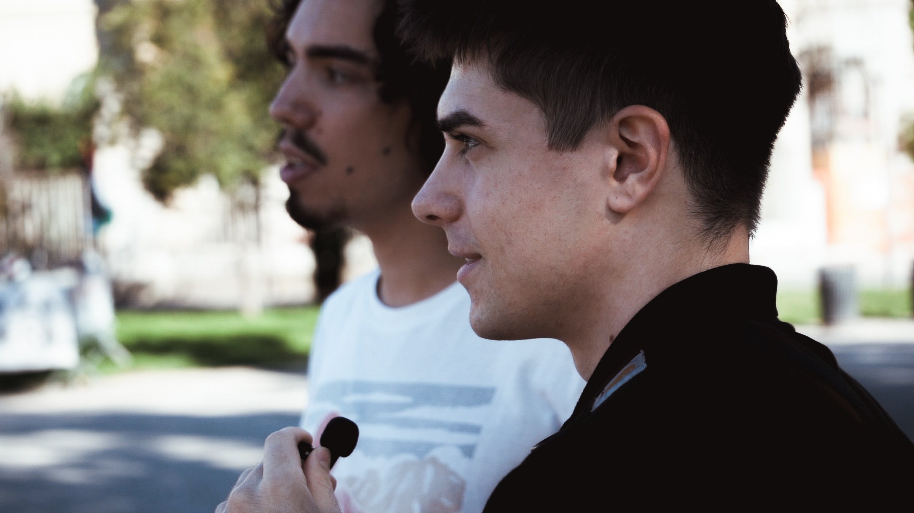
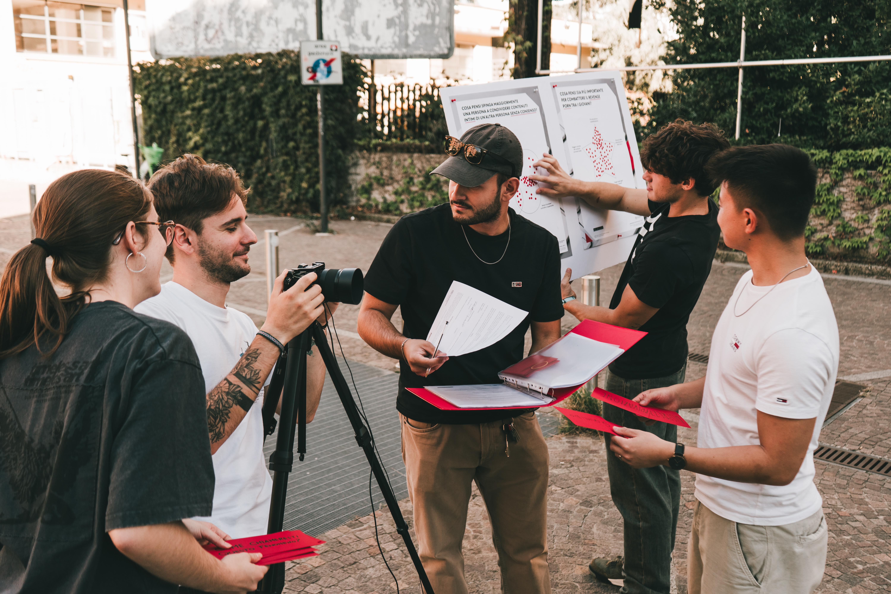
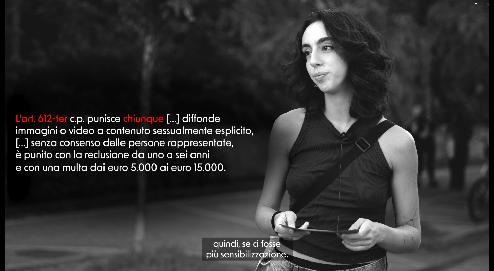

Intercept (Perception)
CONCEPT
The Intercept video is the result of the first phase of my team’s bachelor thesis project on the reality and consequences of the revenge porn. As part of our research process, we conducted a series of interviews whose goal was to explore the perception of our target audience: the students of the Politecnico di Milano.
This approach emerged from an initial reflection on our own awareness, which we found lacking, and therefore highlighted the need to better understand how the topic is more broadly perceived. Each of the 80 interviewed students was asked five specifically designed questions, that aimed to increasingly guide participants into the subject.
The results were then appointed and made part of our research sample, and out of them we produced the first audiovisual artifact of the whole campaign.
“How could we inquire what people know about this theme?”





